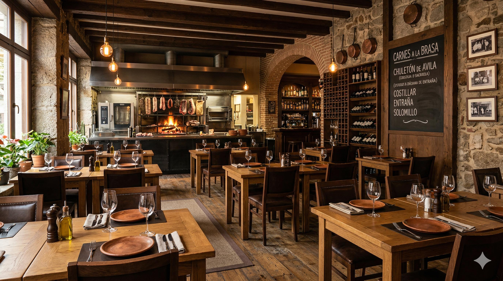
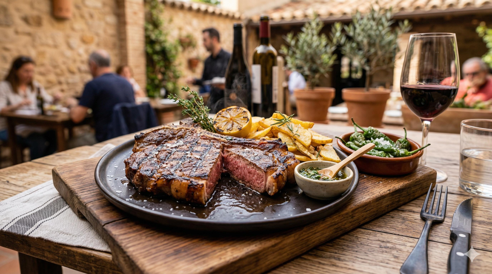
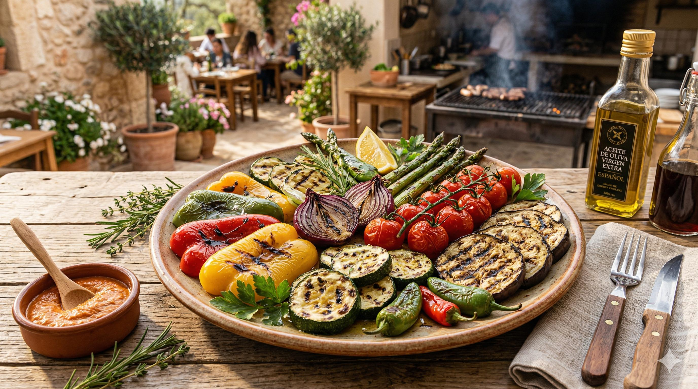
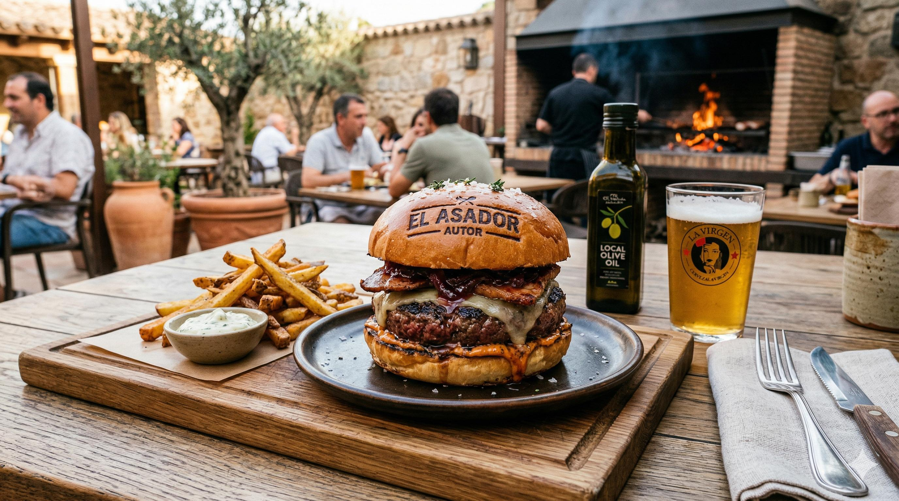

Abrasas & Humo
El sabor ancestral del fuego y las mejores carnes maduradas en un entorno rústico y acogedor.

En Abrasas & Humo, rescatamos la cocina de origen. Utilizamos maderas seleccionadas de encina y sarmiento para dotar a nuestros cortes de carne de buey y verduras de temporada de un aroma ahumado inconfundible. Un espacio donde la técnica de la brasa se eleva a la categoría de arte, ofreciendo una experiencia sensorial única para los amantes del sabor auténtico.
En Abrasas & Humo, no solo cocinamos; rendimos culto al elemento que cambió la historia de la humanidad: el fuego. Nuestra filosofía se aleja de las prisas del mundo moderno para abrazar los tiempos pausados de la brasa y el respeto sagrado por el producto.
Nuestro platos destacados



El Corazón de Nuestra Cocina
Todo comienza con la selección de la madera. Utilizamos encina, por su calor constante y duradero, y sarmiento de vid, que aporta esos matices frutales y elegantes tan característicos de nuestra tierra. Cada corte de carne, desde nuestro chuletón madurado durante 60 días hasta el secreto ibérico, es tratado con una técnica de asado que sella los jugos y potencia los sabores naturales mediante una caramelización perfecta.
Una Experiencia para los Sentidos
- El Aroma
- Desde que cruzas el umbral, el perfume de la leña y el tostado de la carne te envuelven en un abrazo cálido y nostálgico.
- El Espacio
- Paredes de piedra vista, vigas de madera recuperada y una iluminación tenue crean el refugio perfecto para una cena íntima o una celebración familiar alrededor de una mesa generosa.
- La Huerta de Hierro
- No todo es carne. Nuestras verduras de temporada, rescatadas directamente de agricultores locales, pasan por la parrilla para revelar texturas y dulzuras que solo el contacto directo con el fuego puede extraer.
- Dirección
- Puedes encontrarnos en Calle de los Herreros, 14, 05001 Ávila